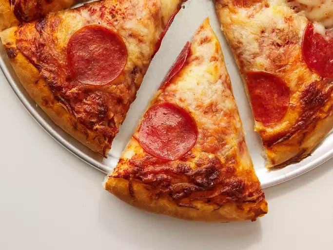

Pizza

Descripcion
Cómo hacer pizza de pepperoni de manera fácil y con todas las fotos del paso a paso. Receta de pizza pepperoni, una de las pizzas más famosas a nivel mundial, hecha con la auténtica masa de pizza italiana.
Ingredientes
- 100 gr de harina
- 1 cucharada de sal
- 1 cucharadita de azúcar
- 65 ml de agua tibia
- Media cucharada de aceite de oliva virgen extra
- Medio sobre de levadura
Ingredientes cobertura
- Salsa de tomate
- Queso Mozzarella
- Salame, el pepperoni italiano
- Pimienta negra y oregano
- Un poco de aceite de oliva virgen extra
Pasos
- ¡Empezamos por la masa! Juntamos la harina, la sal, el azúcar y el aceite de oliva en un bol para batir. Después, disolvemos la levadura en el agua tibia y lo juntamos con los demás ingredientes. Lo mezclamos todo bien mezclado hasta que sea una bola. Después se tapa con un paño y lo dejamos una hora aproximadamente para que crezca.
- Pasado el tiempo de reposo, extendemos la masa con forma redonda o cuadrada. Lo mejor, si queremos una auténtica pizza napolitana, será hacerla redonda. Podemos añadir un poco de harina en la superficie y en el rodillo.
- Cuando está lista la masa añadimos los ingredientes para hacer nuestra pizza pepperoni. Ponemos primero la salsa de tomate junto con las especies. Después colocamos el salame y, finalmente, el queso mozzarella. Si nos gusta mucho el queso también podemos añadir queso rallado encima de la mozzarella.
- La introducimos en el horno durante una media hora a 170ºC, ¡aunque el tiempo es relativo! Hay que fijarse en los bordes de la pizza y en el queso, y cuando los bordes estén dorados y el queso bien deshecho, ¡la pizza ya estará lista!